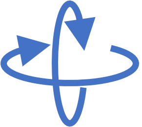

Zoom with mouse wheel; rotate by holding down the mouse and dragging.
Click "s" to toggle between Zoom/Rotate and Select.
Drag a rectangle to select points. Hold down comand key to select more than one region.
Click "s" to toggle between Zoom/Rotate and Select.